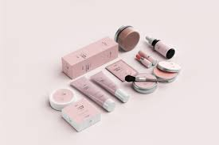
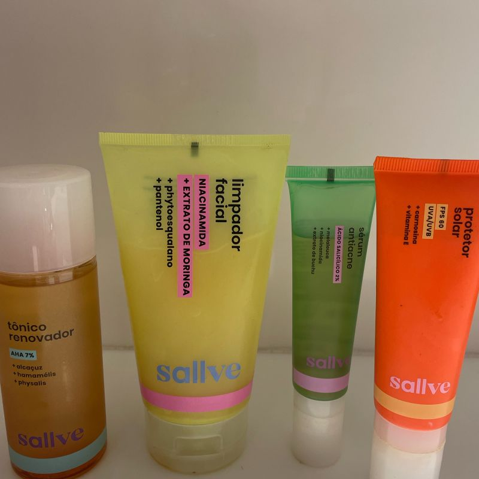
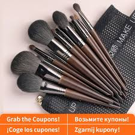
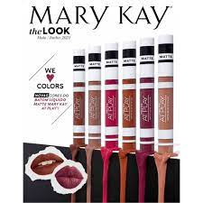
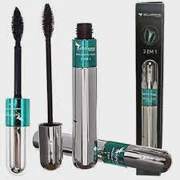
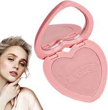
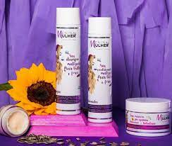
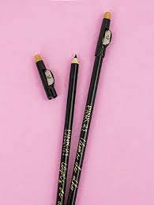
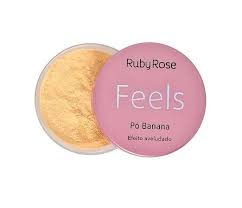

beleza verdadeira
Os produtos femininos mais vendidos são roupas, sapatos, cosméticos, bolsas, joias e bijuterias e produtos fitness. Então se você deseja trabalhar com o público feminino, suas possibilidades são amplas!
bases

valor
adicionar ao carrinho
produtos limpeza facial

conjunto de pinceis de maquiagem

batons liquidos

mascara para cilios

pó blush para bochecha

Kit Menina & Mulher Matizador Pós-Química (3 Produtos)

lapis de olho preto com apontador

Pó Banana Efeito Aveludado Feels Ruby Rose Feminino Adulto

Paleta de sombra para os olhos

Creme de Caracol | Creme Facial Hidratante Natural com Extrato de Mucina de Caracol

Removedor De Maquiagem - Fashion D-Make -50ml